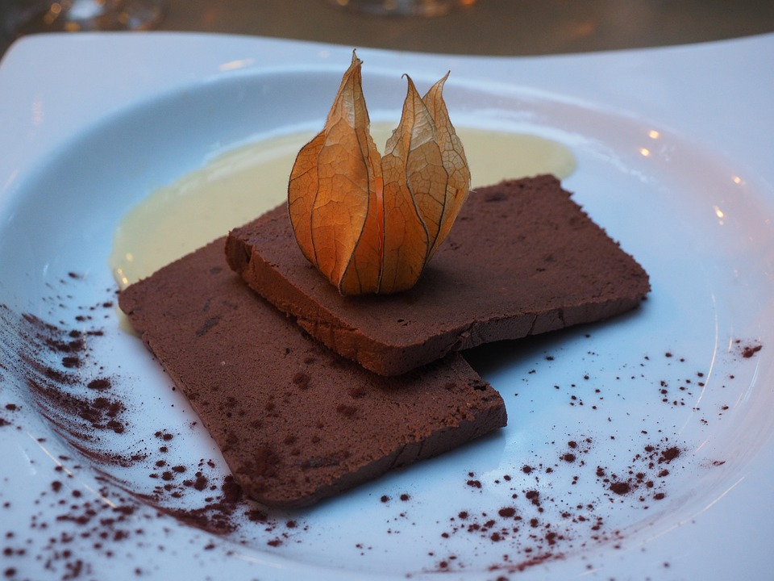

Chocoladeparfait
Dit nagerecht is een smaakexplosie van chocolade. De unieke bereidingswijze maakt dit een zeer goede aanrader voor de chocolade liefhebbers.
Ingrediënten
- 100 Gram heelei
- 50 Gram Eidooier
- 100 Gram Kristalsuiker
- 50 Gram Chocolade
- 50 Gram Creme de cacao
- 5dl Slagroom zonder suiker
Bereidingswijze
- Klop de slagroom lobbig (Yoghurtdikte) en zet deze in de koelkast.
- Doe het heelei de eidooiers en suiker bij elkaar en een kom en verwarm dit onder voortdurend kloppen met een garde au bain-marie tot ongeveer 60ºC (controleer dit met behulp van een thermometer).
- Klop deze voortdurend terwijl u deze uit de au bain-marie haalt tot een koud en luchtige eiermassa.
- Smelt de chocolade (Au bain-marie of via de magenetron methode)
- Spatel de gesmolte chocolade met de creme de cacao door de eiermassa.
- Spatel de slagroom erdoor.
- Stort de massa in vormen en vries het ± 2,5 - 3 uur in.
- Los daarna de parfait op een bord en snijd deze in de gewenste vorm en dikte.

Tip Koud serveren met wat amandelschaafsel.